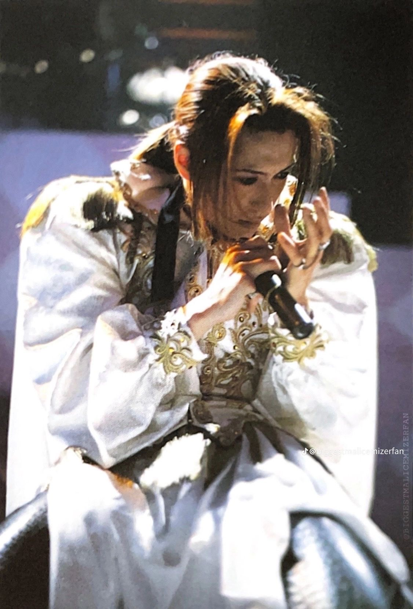
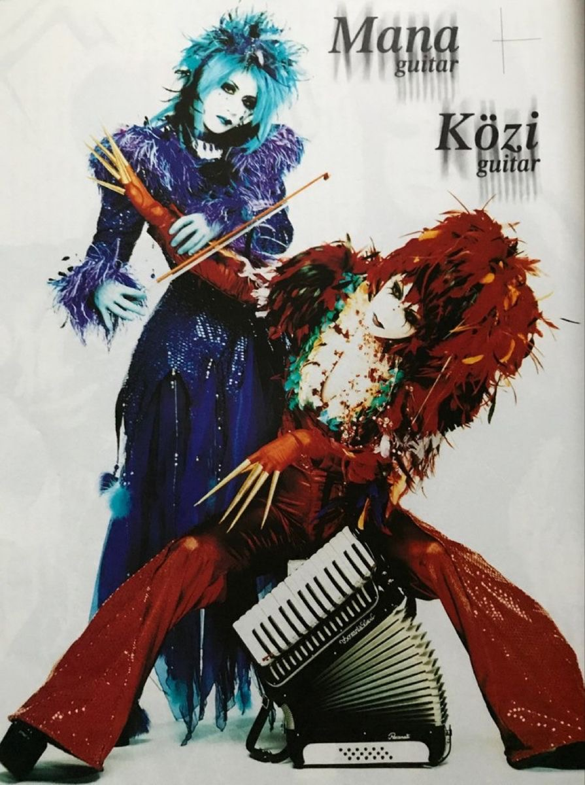
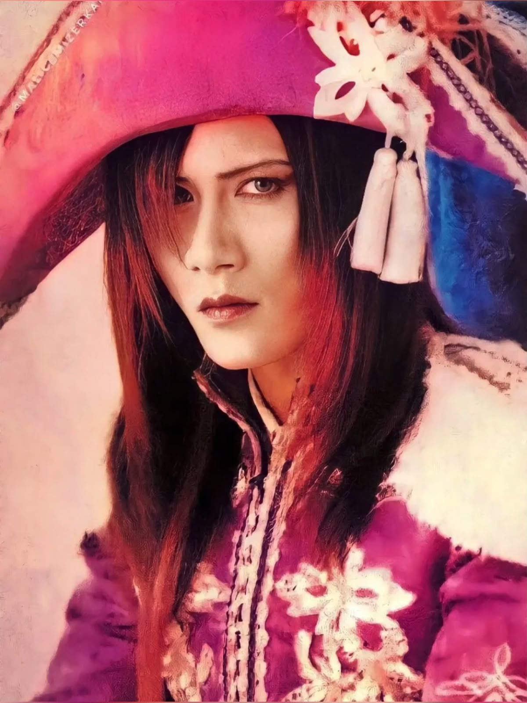

Tetsu je bio originalni pevač "Malice Mizer-a" u prvoj benda, od 1992.do 1994. godine. Njegov vokal, kao što je već spomenuto, bio je dramatičan i emotivan, vrlo prepoznatljiv. Njegov vokal možemo čuti na albumima "Memoire" i "Sans-logique", kao i na nekim singl pesama od kojih su sada ostali samo delići, i to niskog kvaliteta zvuka na Youtube-u. Vizuelni stil benda u tom periodu bio je manje razrađen nego kasnije. Nemamo kvalitetnih snimaka nastupa iz ove ere benda, najpre zbog njegovog niskog budžeta tada i zbog manjka popularnosti.
Tetsu je napustio bend zbog kreativnih nesuglasica i vremenom ostvario muzičku karijeru u drugim bendovima.

Gackt je drugi i najpoznatiji vokal benda, zaslužan za njihov proboj popularnosti. Gackt era je trajala od 1995. do 1999. godine. Njegov bariton/tenor raspon glasa, harizmatična scenska pojava i šarm obeležili su albume "Voyage sans retour" i "Merveilles", razne visokobudžetne spotove i kratke filmove. Važno je pomenuti da su u ovoj fazi članovi benda imali svoje karakteristične boje, a Gackt je najčešće bio prikazan zlatnom ili crnom bojom. Ova era benda imala je ogroman značaj za visual-kei pokret i njegove dalje motive. Gackt je napustio bend kako bi pristupio solo karijeri. Gackt je bio vrlo uspešan u njoj, još je najpopularnija rok zvezda u Japanu.
Klaha je poslednji vokal u završnoj fazi benda. Bio je u njemu od 2000. do 2001. godine i sa sobom je doneo znatno mračniji i religijski inspirisan tonalitet. Njegov dubok glas napravio je gotičku atmosferu u albumu "Bara no Seidou" i drugim singl pesmama. Veruje se da se prelazak iz tako pozitivne i romantične Gackt ere u mračnu Klaha eru, dogodio jer je Kami, bubnjar "Malice Mizer-a" preminuo kratko pre Gacktovog odlaska.
Vizuelni koncept ove faze uključivao je katedrale, latinsku simboliku i vampirske motive. Nakon pauze benda 2001. godine Klaha je napustio bend, i kao Gackt pristupio solo karijeri, koja je pritom trajala kratko. Klaha se nakon toga potpuno povukao iz javnosti i muzičke industrije.

Mana je suosnivač, glavni kompozitor i idejni tvorac estetike "Malice Mizer-a". Bio je gitarista i ponekad klavijaturista. Takođe je bio zadužen za kostime, scenografiju i omote albuma. Poznat je po crossdressing-u, androgenom izgledu i retkom javnom govoru. Bio je karakterisan plavom bojom i simbolom lutke. Bio je u bendu tokom celog njegovog postojanja a kasnije osnovao novi bend "Moi Dix Mois" i modni brend "Moi-meme-Moitie".
Közi je suosnivač, kompozitor i gitarista kao i Mana, ali zaslužan za eksperimentalnost zvuka. Njegove kompozicije su često imale nekonvencijalne strukture. On je bio gotovo uvek bio karakterisan crvenom bojom i simbolom klovna ili džokera. Posle raspada benda započinje solo muzičku karijeru i sarađuje sa drugim umetnicima.

Yu-ki je basista benda i kao Mana i Közi, bio je u bendu tokom celog njegovog postojanja. Izuzetno je svirao, a nekad je učestvovao i u komponovanju i pisanju pesama. Često je bio odeven u žutu boju i gusarski kostim. Prepoznatljiv po kovrdžavoj kosi i često, brkovima. Posle raspada benda počeo je da se bavi pravljenjem nakita.
Kami je bio bubnjar benda i jedan od najuticajnijih članova za njegov razvitak. Često je pevao prateći vokal. Kami je iznenada preminuo 1999. godine u snu. Imao je 27 godina. Bio je prepoznatljiv po njegovoj izuzetno dugačkoj kosti, ljubičastoj boji, i simbolom leptira. Članovi benda su posle njegove smrti često koristili motive leptira u spotovima, omotima albuma i tekstovima. Posle nisu imali zvaničnog bubnjara ali je Kamijev učitelj, Sakura često svirao sa njima.
Lena Dragutinović Gimnazija Bačka Palanka 2026.